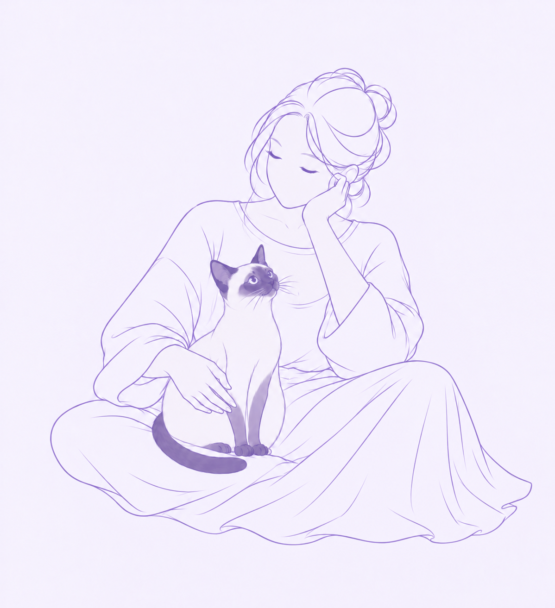

Current Focus
01
From idea
to useful service.
PEOPLE · IDEAS · TECHNOLOGY
PORTFOLIO · PLANNER · EDUCATOR · AI BUILDER
복잡한 문제를 관찰하고 정리해, 실제로 사용할 수 있는 서비스로 연결합니다.
Selected Work →PEOPLE · IDEAS · TECHNOLOGY
BUILD LOOP
ABOUT

사람의 불편을 발견하고 복잡한 문제 속에서 핵심을 찾아내는 일을 좋아합니다.
교육, 상담, 서비스 기획 경험을 바탕으로 AI와 웹 개발을 배우며 아이디어가 실제 제품으로 이어지는 과정을 만들어가고 있습니다.
기술 자체보다 누가, 왜, 어떻게 사용하는지를 먼저 생각합니다.
EXPERTISE
사용자의 문제를 발견하고 서비스의 구조와 방향을 설계합니다.
AI를 활용해 아이디어를 구체화하고 서비스 가능성을 실험합니다.
HTML · CSS · JavaScript · Python으로 직접 구현합니다.
교육 · 상담 · 문서화를 통해 복잡한 내용을 쉽게 전달합니다.
SELECTED WORK
GitHub 프로젝트를 불러오는 중입니다.
CONTACT